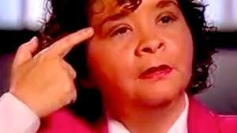

Su muerte
Selena fue asesinada por Yolanda Saldívar, una de sus más fervientes seguidoras y amiga, de un balazo que le destrozó la parte derecha del torso. La cantante murió desangrada en el hospital, donde no pudieron hacer nada por salvarle la vida. La ambulancia llegó cinco minutos después del suceso, que ocurrió en el motel Days Inn de la ciudad tejana de Corpus Christi.
En el juicio contra Saldívar se pudo reconstruir un relato cronológico de los hechos. La víspera del asesinato, la artista aceptó encontrarse con Saldívar, que había sido la presidenta de su club de fans. La asesina había sido también la directora de las tiendas de moda de Selena. La familia Quintanilla, después de la mala gestión de Saldívar, decidió prescindir de sus servicios, concretamente, 20 días antes del asesinato. El encuentro tenía como objetivo que Saldívar entregara documentos financieros de la empresa. La exgerente de las tiendas de Selena no dio los citados papeles y alegó a la artista que había sido violada. En el juicio por el asesinato, Saldívar acusó de dichos abusos al padre de Selena, quien negó los hechos. Al escuchar la denuncia de Saldívar, Selena decidió acompañarla al hospital, donde los médicos no vieron ninguna evidencia de violación. De regreso al motel, Selena le comentó a Saldívar que consideraba que debían de dejar de verse durante un tiempo. Una vez en el Days Inn, ambas discutieron por los documentos que requería la cantante.
Finalmente, la artista recogió los papeles y se encaminaba a dejar la habitación del motel cuando Saldívar apretó el gatillo de una pistola Taurus 38. Herida de gravedad, Selena pidió auxilio durante su huida hasta que se desplomó desangrada. Por su parte, Saldívar se recluyó en su vehículo amenazando con suicidarse. No fue hasta la noche que la asesina de Selena Quintanilla se entregó a los agentes que habían acudido a detenerla. Siete meses después del asesinato, Saldívar fue declarada culpable por un juez de Houston y condenada a cadena perpetua. En el juicio, Saldívar se excusó diciendo que la bala era para ella.
